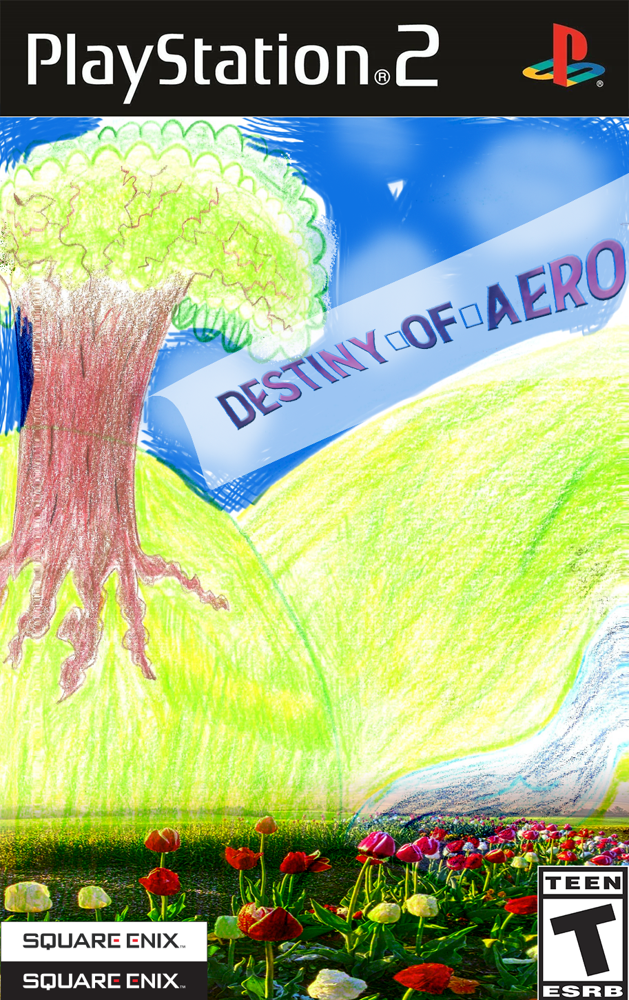
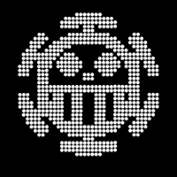
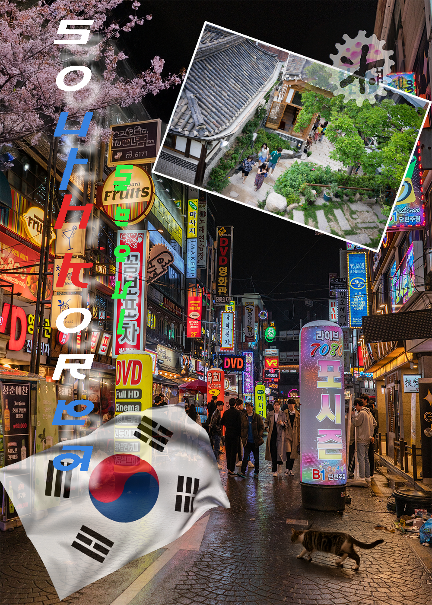

My Resume
Contact Information
Name: Justin Harakh
Email: jdharakh@gmail.com
Github: justin-harakh-Stein
Hello, My name is Justin Harakh and I working on becoming a passionate digital artist and designer. So, that I can use my talents to work on stuff for my family.
I do not know too much about programming but I'm willing to learn and experiment ways on how to improve my skills.
Software
- Adobe Photoshop
- Adobe Illustrator
- Adobe Premiere Pro
- Powerpoint
- Microsoft Word
Skills
- Drawing
- Photography
- Video Editing
- Graphic Design
Work Samples
This is a collage I made for my Digital Art class, where I had to make a collage of my favorite things.

I made a icon for when I start my Youtube Channel, for when I play video games and talk about certain subjects with other people.

This is a picture I took of the Seoul Tower in South Korea, when I went there for vacation.

This is a drawing I made for my Digital Art class, where I had to create video game cover.
- 
I made this artwork out of small dots for my class and it's by my favorite character.
- 
I created a postcard of South Korea, it was a great project that I'm very proud of.
- 
Thank you for taking the time to view my resume. I look forward to the opportunity to contribute my skills and creativity to your team.